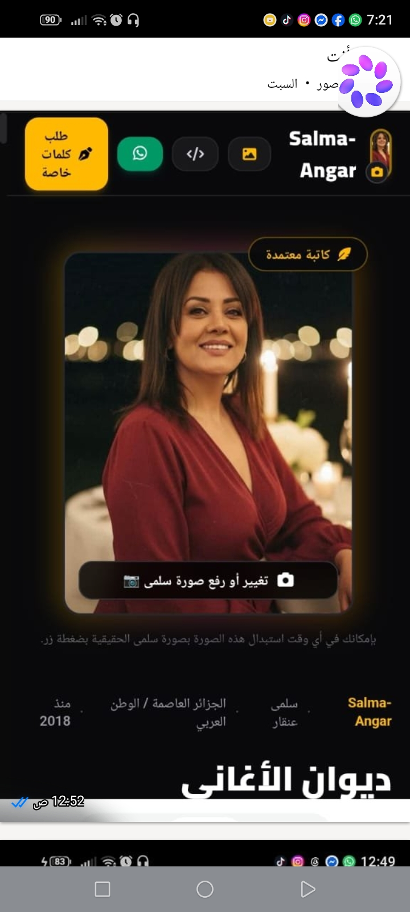

على أوتار الغياب
قصيدة غنائية
على أوتارِ الغيابِ تَعزفُ أشواقي شَجناً،
وَيَمُرُّ طيفُكَ في ليلِ الحَنينِ سَكَناً.
مَا غِبتَ عَن عيني وإن بَعُد المَدى،
أنتَ النَّشيدُ وعُمرٌ بالوَفاءِ بَدَا.

"في هذه الواجهة، كل نص شعري كُتب من نبض الروح.. وتحته مباشرة الأغنية واللحن الذي يروي حكايته."
على أوتارِ الغيابِ تَعزفُ أشواقي شَجناً،
وَيَمُرُّ طيفُكَ في ليلِ الحَنينِ سَكَناً.
مَا غِبتَ عَن عيني وإن بَعُد المَدى،
أنتَ النَّشيدُ وعُمرٌ بالوَفاءِ بَدَا.
إن النص الغنائي ليس مجرد رصٍّ للكلمات على بحور الشعر، بل هو تجسيد للمشاعر الإنسانية والاجتماعية المعاشة. الأغنية الناجحة تبدأ دائماً من عمق الفكرة وقوة المفردة المكتوبة.
سلمى عنقر، شاعرة ومؤلفة غنائية جزائرية، تمتاز نصوصها بالعمق الوجداني ومحاكاة الأصالة الأدبية بروح معاصرة. قدمت العديد من التعاونيات الفنية والأعمال الغنائية التي أثرت الساحة الفنية بمفردات متميزة تعبر عن الهوية والمشاعر الإنسانية الصادقة.